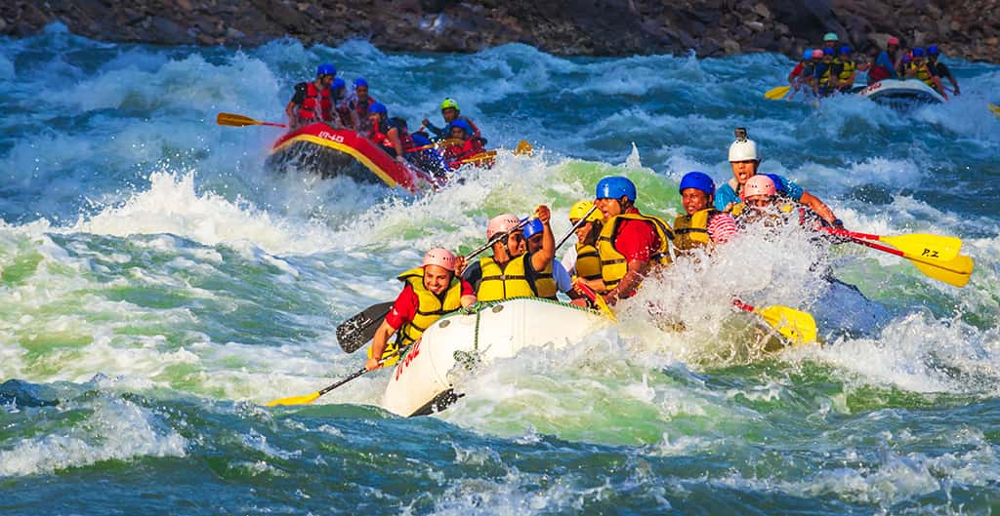
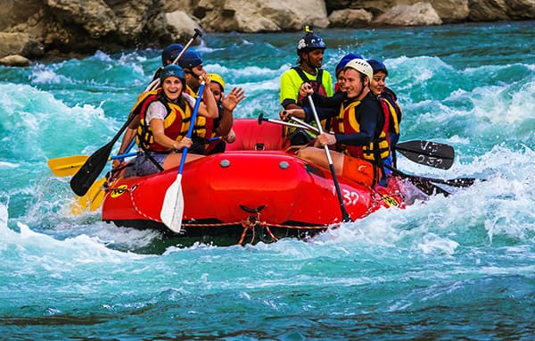

EcoRaft

A EcoRaft nasceu com o objetivo de proporcionar aventuras inesquecíveis em meio à natureza, unindo
emoção, segurança e respeito ao meio ambiente. Nossa missão é oferecer experiências de rafting para
todas as idades, incentivando a preservação dos rios e o turismo sustentável. Nossa visão é ser
referência em esportes de aventura, criando momentos únicos para cada visitante. Nosso lema é:
"Aventura, natureza e diversão em cada correnteza."
História
A EcoRaft foi fundada em 2020 por um grupo de amigos apaixonados por aventura e pela natureza.
Durante uma expedição por rios e corredeiras, eles perceberam que muitas pessoas tinham vontade de
praticar rafting, mas não encontravam empresas que unissem segurança, qualidade e respeito ao meio
ambiente. Foi então que decidiram criar a EcoRaft.
Desde o início, a empresa tem como objetivo proporcionar experiências inesquecíveis para pessoas de
todas as idades, sempre com o acompanhamento de guias capacitados e equipamentos de alta qualidade.
Além de oferecer passeios emocionantes, a EcoRaft também incentiva a preservação dos rios e da
natureza, acreditando que a aventura deve caminhar lado a lado com a sustentabilidade.
Ao longo dos anos, a EcoRaft conquistou a confiança de centenas de visitantes e se tornou uma
referência em turismo de aventura, transformando cada descida pelas corredeiras em uma experiência
única, segura e cheia de emoção.